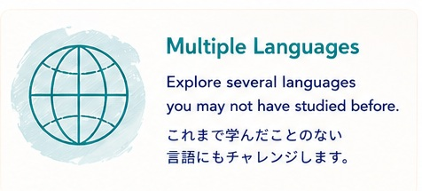
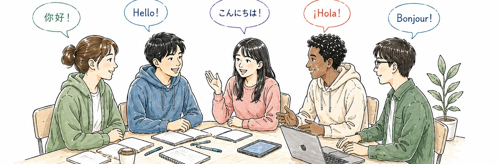
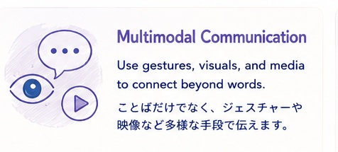
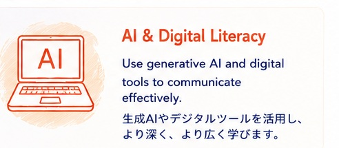
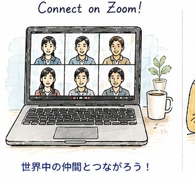
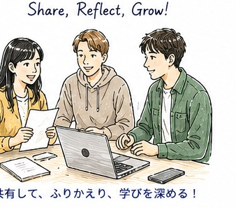

Multiple Languages
Explore several languages you may not have studied before.
これまで学んだことのない言語にもチャレンジします。
Liberal Arts Seminar / 教養セミナー
Explore multilingual and multimodal communication in a diverse world.
多言語・マルチモーダルなコミュニケーションを通して、多様な世界とつながる力を育てます。


Explore several languages you may not have studied before.
これまで学んだことのない言語にもチャレンジします。

Use gestures, visuals, and media to connect beyond words.
ことばだけでなく、ジェスチャーや映像など多様な手段で伝えます。

Use generative AI and digital tools to communicate effectively.
生成AIやデジタルツールを活用し、より深く、より広く学びます。
About / この授業について
This seminar offers a practical experience in using multiple languages and multimodal communication. You will engage in conversations, create video projects, and reflect on your learning in three languages.
このセミナーでは、複数の言語とマルチモーダルなコミュニケーションを実践的に学びます。 会話や映像制作、リフレクションを通して、さまざまな文化や価値観を理解し、つながる力を育てます。
Make videos casually, anywhere.
スマホで気軽に撮影！

Talk with classmates around the world.
世界中の仲間とつながろう！

Share your ideas and deepen your learning.
共有して、ふりかえり、学びを深めます。
Course Flow / 授業の流れ
Basic Conversation → Video Project → Reflection
Weeks 1–6 / 1–6回Basic Conversation → Video Project → Reflection
Weeks 7–10 / 7–10回Basic Conversation → Video Project → Reflection
Weeks 11–14 / 11–14回Learning Outcomes / 到達目標
Understand diverse cultures and values through multilingual communication.
多言語コミュニケーションを通して、多様な文化や価値観を理解します。
Use verbal, non-verbal, and visual strategies flexibly.
ことば・身振り・視覚的要素を組み合わせ、柔軟に伝える力を高めます。
Use generative AI and digital tools to learn, create, and communicate effectively.
生成AIやデジタルツールを活用し、学び続ける力を身につけます。
Instructor / 担当教員
College of Pharmaceutical Sciences, Ritsumeikan University
Contact / 連絡先：kondoyu@fc.ritsumei.ac.jp